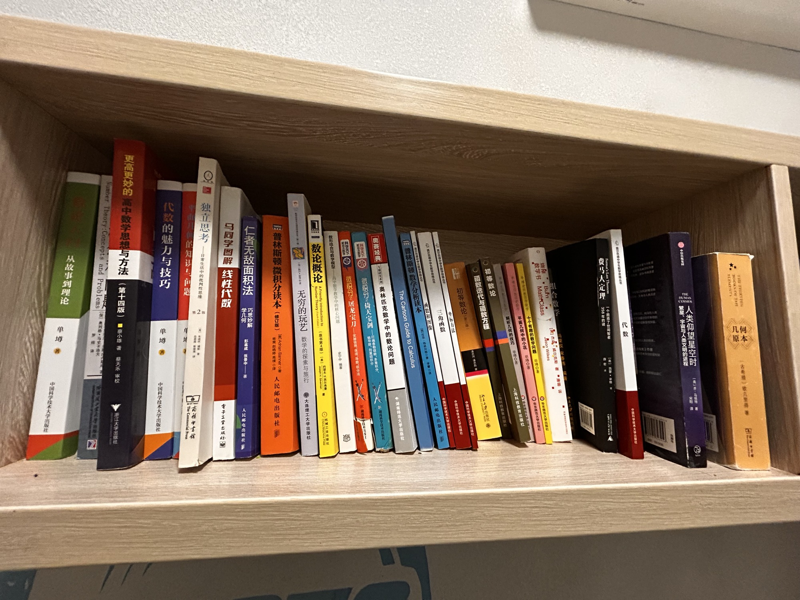

北房上排1

- 从故事到理论 单墫 中国科学技术大学出版社
- Number Theory: Concepts and Problems [保]奥河格·马史卡洛夫
- 更高更妙的高中数学思想与方法 第十四版 蔡小雄著 蔡天乐审校 浙江大学出版社
- 代数的魅力与技巧 单博 中国科学技术大学出版社
- 平面几何的知识与问题 单墫 中国科学技术大学出版社
- 独立思考：日常生活中的批判性思维 第2版 商务印书馆 The Commercial Press
- 马同学图解线性代数 電子工業出版社
- 仁者无敌面积法：学几何 巧思妙解 彭盒成 张景中 著 人民邮电出版社
- 普林斯顿微积分读本（修订版） Adrian Banner 杨爽 赵跳婷 高璞 译 人民邮电出版社
- 无穷的玩艺：数学的探索与旅行 大连理工大学出版社
- 数论概论 Number Theory: A Friendly Introduction（原书第4版）[美]约瑟夫·H·西尔弗曼 机械工业出版社 China Machine Press
- 数形结合与数学模型：高中数学教学中的核心问题 史宁中编著
- 微积分之屠龙宝刀——笑傲极限、连续、导数、积分法
- 微积分2：倚天宝剑 偏导数、向量微积分 打通泰勒级数、多重积分
- 奥赛经典 专题研究系列 奥林匹克数学中的数论问题 湖南师范大学出版社
- The Cartoon Guide to Calculus
- 普林斯顿数学分析读本 人民邮电出版社
- 中学生数学书：函数和图像 中国科学技术大学出版社
- 中学生数学书：三角函数 中国科学技术大学出版社
- 中学生数学思维丛书：坐标方法 中国科学技术大学出版社
- 初等数论
- 函数迭代与函数方程 上海科技教育出版社
- 初等数论 上海科技教育出版社
- 解析几何的技巧 华东师范大学出版社
- 平面几何中的小花 华东师范大学出版社
- 十个有趣的数学问题 华东师范大学出版社
- 数学书 Math Class Jason Wilkes [美]杰·威尔克斯 著 唐璐 译 组合数学
- 费马大定理：358年的一个困惑了世间智者
- 中学生数学思维丛书：代数 中国科学技术大学出版社
- COSMOS HUMAN THE 人类仰望星空时：繁星、宇宙与人类文明的进程
- THE THIRTEEN BOOKS OF THE ELEMENTS 古希腊欧几里得著
共 31 本书，上传于 2026-10-03 02:21:48。